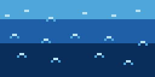

Evaporación
El Sol calienta la superficie de mares, ríos y lagos. El agua líquida absorbe energía y se transforma en vapor de agua, un gas invisible que asciende hacia la atmósfera.

En una playa tropical, un charco pequeño puede evaporarse en minutos. El océano entero tarda mucho más, pero cada día envía al cielo millones de toneladas de vapor.
Dato curioso: el agua ya es vapor a partir de los 0 °C si hay suficiente energía. No hace falta que hierva.